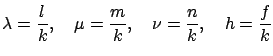

En general, para cualquier superficie definida por la ecuación , el plano tangente en el punto perteneciente a la superficie es:
Donde cada derivada parcial se evalúa en
.
Para el caso de una elipsoide
 ,
, por lo que
el plano tangente resulta:
,
, por lo que
el plano tangente resulta:
Esta ecuación en vista de (A.1), se reduce a:
Sea un punto
que se encuentra en el plano
tangente definido por (A.2). Por lo tanto,
puede estar fuera o sobre
 ; y si se encuentra fuera la
recta que une con
es tangencial a
; y si se encuentra fuera la
recta que une con
es tangencial a
 en
. Sustituyendo en
(A.2) resulta:
en
. Sustituyendo en
(A.2) resulta:
 |
Por lo tanto, cada recta que pasa por que es tangencial a
 , la instersecta en
, que
además de pertenecer a
, la instersecta en
, que
además de pertenecer a
 pertenece al plano
pertenece al plano
Para cualquier punto (tanto fuera, sobre o dentro de la
elipsoide), se define el plano polar a la elipsoide
 tal como aparece en (A.3); el punto
se denomina polo de dicho plano. En el caso particular que
el polo pertenezca a
tal como aparece en (A.3); el punto
se denomina polo de dicho plano. En el caso particular que
el polo pertenezca a
 , entonces por
(A.2) y (A.3) el plano polar será
tangencial a
, entonces por
(A.2) y (A.3) el plano polar será
tangencial a
 en .
en .
Ahora bien, un plano arbitrario de ecuación
El punto está fuera de
 si y sólo si su plano polar
se intersecta con
si y sólo si su plano polar
se intersecta con
 . Por lo tanto, el plano
(A.4) intersecta la
. Por lo tanto, el plano
(A.4) intersecta la
 sí y sólo sí:
sí y sólo sí:
En definitiva, el plano (A.4) intersecta
 , si y
sólo si
, si y
sólo si
Pero si dividimos la ecuación (A.4) por si y en caso contrario por , el plano pasa a ser igualmente especificado por la ecuación escalada:
|  |
De esta forma,  es el largo del vector normal al plano desde el
origen, y además dicho vector tiene la dirección del vector
unitario
. Ahora el punto puede volver a
ser especificado por:
es el largo del vector normal al plano desde el
origen, y además dicho vector tiene la dirección del vector
unitario
. Ahora el punto puede volver a
ser especificado por:
Ésta es la condición que se utilizó para verificar si un plano
normal al vector
intersecta al
elispoide
 . De ahora en adelante, se supondrá que se
trabaja con planos que intersectan la elipsoide.
. De ahora en adelante, se supondrá que se
trabaja con planos que intersectan la elipsoide.